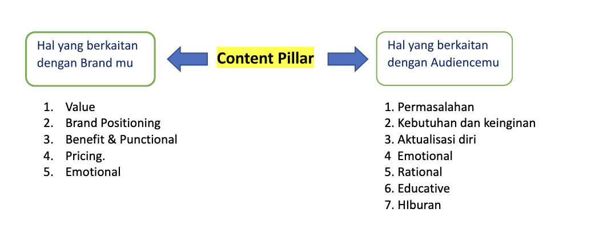

Cara Menentukan dan Membuat Content Pillar
Cara Menentukan dan Membuat Content Pillar serta Template-nya
Content pillar adalah hal yang wajib diketahui dan dikuasai para profesional yang ingin terjun dalam dunia content marketing. Menurut data dari Hubspot, 40% perusahaan mengatakan bahwa strategi content marketing sangat penting dalam strategi pemasaran secara umum. Lalu, 80% perusahaan sudah secara aktif menggunakan strategi pemasaran ini. Namun, menurut The Content Strategist, masih banyak yang merasa bingung dan belum tahu cara membuat content pillar dan perencanaannya yang benar.Padahal, menentukan dan membuat content pillar sangat penting karena dapat membantu sebuah bisnis meningkatkan daya tarik dan brand awareness dengan pesat.
Lantas, bagaimana cara menentukan dan membuat content pillar yang benar agar cocok dengan bisnis dan audiensmu?
Jika penasaran, yuk, langsung cermati cara-caranya di bawah ini!
Cara Menentukan Content Pillar
Content pillar secara sederhana adalah kategori atau tema utama yang akan dibahas brand-mu secara konsisten yang akan memikat audiens. Topik-topik ini nantinya bisa menjadi panduan untuk mempermudah perencanaan ide konten dan menentukan konten yang paling relevan dengan audiens. Namun, sebelum menyusun sebuah pilar konten, kamu harus temukan dahulu tema-tema apa saja yang paling cocok untuk brand-mu. Later Blog menulis bahwa ada 3 cara efektif untuk menentukan content pillar, yaitu:
Cara paling mudah dan tidak membutuhkan biaya untuk menentukan content pillar adalah dengan riset mandiri dengan menganalisa tren yang ada saat ini. Dengan media sosial dan melihat berita, kamu bisa tahu apa saja yang menjadi bahan perbincangan atau tren pada bidang industrimu. Misalnya, brand-mu adalah industri olahan gandum. Kamu bisa coba mencari tahu tema-tema apa saja yang digunakan brand olahan gandum lainnya atau kompetitor yang serupa.
Dari pencarian ini, mungkin kamu bisa mendapati bahwa audiens menyukai tema-tema seperti promosi produk dan konten edukasi. Hal-hal inilah yang bisa kamu jadikan sebagai tema utama kontenmu juga. Namun, jangan lupa untuk telusuri apakah tema itu juga menarik untuk target audiensmu sendiri.
Jika kamu sudah memiliki akun media sosial atau blog untuk brand-mu dan masih mencari tema untuk content pillar. Kamu bisa gunakan cara kedua ini.Selain riset mandiri, kamu juga bisa gunakan survei atau polling untuk tanyakan langsung ke komunitasmu apa saja jenis konten yang mereka liat.
Dengan begitu, kamu akan tahu pasti konten apa saja yang perlu dikembangkan dan lebih diprioritaskan untuk bisnismu, bukan hanya meniru hal yang dilakukan brand lain.
Jika pernah meneliti segmentasi pasar dari bisnismu, kamu bisa gunakan data tersebut untuk menentukan pilar-pilar konten. Mungkin kamu mendapati bahwa kebanyakan pembaca kontenmu itu adalah pekerja kantoran. Dari data ini mungkin bisa kembangkan tema yang berhubungan dengan kehidupan kerja di kantor.
Jika belum memiliki data seperti ini, kamu bisa mulai mencarinya dengan bantuan tools seperti Google Analytics ataupun Analisa.io.
Cara Membuat Content Pillar
Jika sudah selesai menentukan topik, sekarang saatnya kamu mulai menyusun content pillar bisnismu. Content Marketing Institute juga melansir bahwa ada 3 langkah penting yang harus diperhatikan dalam penyusunan content pillar.
Pertama-tama, kamu harus tentukan head term atau, menurut Semrush, merupakan topik yang paling umum dalam tema utama yang sudah ditentukan. Head term yang digunakan harus memiliki cakupan yang luas dan biasanya hanya terdiri dari satu hingga tiga kata. Sebagai contoh, dalam bidang industri kesehatan tulang, kamu bisa gunakan head term seperti “penyakit tulang”.
Setelah mengetahui beberapa head term, coba cari topik-topik utama yang bisa memperjelas konteks head term. Core topic umumnya terdiri dari 4 hingga 6 kata. Jika kita teruskan dari contoh sebelumnya, core topic untuk “penyakit tulang” adalah seperti “fakta tentang penyakit tulang” atau “mencegah penyakit tulang”.
Terakhir, susun beberapa topik yang spesifik dan tentukan juga format konten yang akan dirancang. Topik seperti ini disebut juga sebagai sub topic. Sub topic dalam pencarian keyword SEO serupa dengan long tail keyword. Sebagai contoh, kamu bisa gunakan “makanan yang mencegah penyakit tulang” atau “cara merawat kesehatan tulang sejak dini”.
Itulah pembahasan Restrategix mengenai cara menentukan dan membuat content pillar. Ringkasnya, menentukan dan menyusun content pillar bukanlah hal yang mudah dan mungkin membutuhkan waktu yang relatif lama. Namun, jika sudah mendapatkannya, kamu sudah memiliki gambaran yang lebih jelas tentang konten-konten yang harus kamu prioritaskan untuk strategi content marketing–mu.
Our Clients